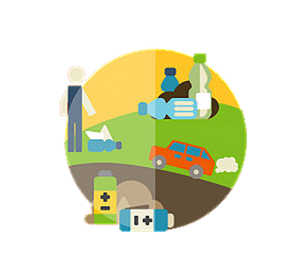

Infelizmente, devido a falta de tempo e de conhecimento sobre nutrição, grande parte da população acaba consumindo em seu dia-a-dia produtos de origem animal, com diversos agrotóxicos, geneticamente modificados e com excesso de conservantes. E tal situação, se repetida durante um período ininterrupto, pode causar diversas consequências para a saúde daquele que possui tais hábitos, como falta de disposição, problemas cardíacos e até mesmo o desenvolvimento de intolerâncias alimentares, além dos males que tais alimentos e produtos causam para o meio-ambiente, visto que, além de haver grande exploração animal atrás da produção destes alimentos, eles também causam a liberação de mais de uma tonelada de CO2 na atmosfera anualmente, além de gerar grandes gastos com água, visto que em apenas um único dia, para realizar a produção de um (1) quilo de carne, gasta-se 16.000 litros de água.
Para que consiga se adquirir uma maior consciência sobre aquilo que você coloca dentro do seu corpo e os impactos que este alimento tem sobre o planeta Terra, é necessário que você entenda que a alimentação não é apenas um fator nutricional, e sim um estilo de vida que você desenvolve ao longo do tempo por meio de pequenos hábitos que fazem a diferença, tais como: olhar os rótulos daquilo que você compra para saber o que exatamente você está comendo, buscar comprar produtos orgânicos e sazonais, reduzir o consumo de carne e derivados e buscar sentir prazer e se satisfazer com aquilo que você come, respeitando não apenas a natureza como também o seu corpo.
Assim, por meio de uma maior consciência alimentar, você consegue desenvolver um melhor relacionamento com o alimento e todos os nutrientes e benefícios que este pode trazer para o seu corpo, além de desenvolver, também, um senso critico sobre como tais alimentos podem causar impactos ambientais se produzidos ou consumidos de uma maneira incorreta, fazendo com que o conhecimento real sobre comida faça com que tanto o seu corpo como a natureza consigam florescer e ganhar cada vez mais vida!